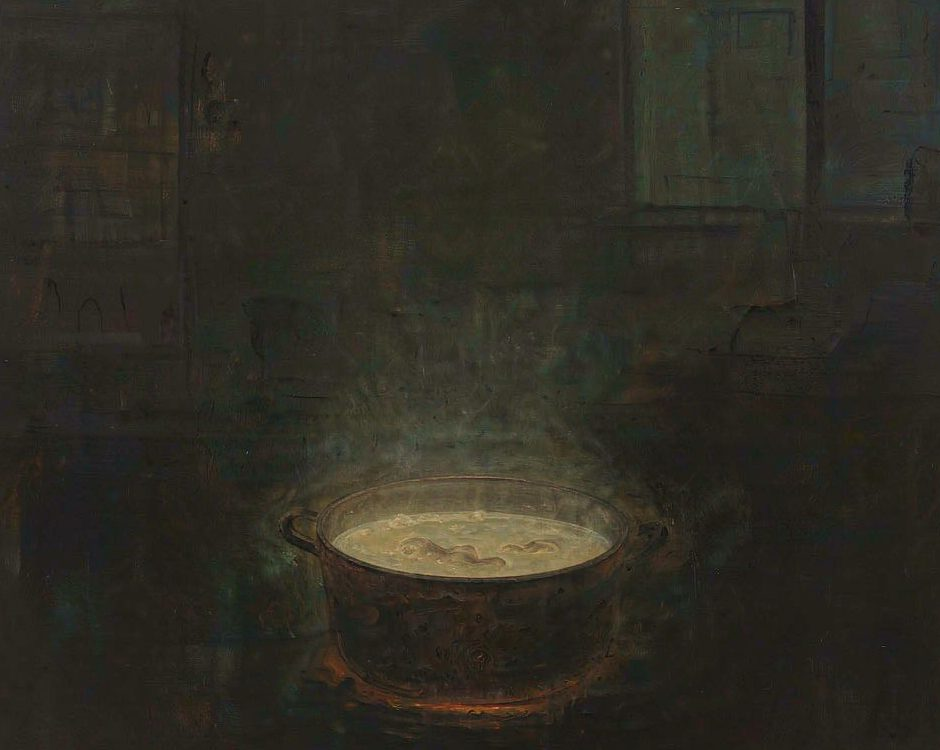
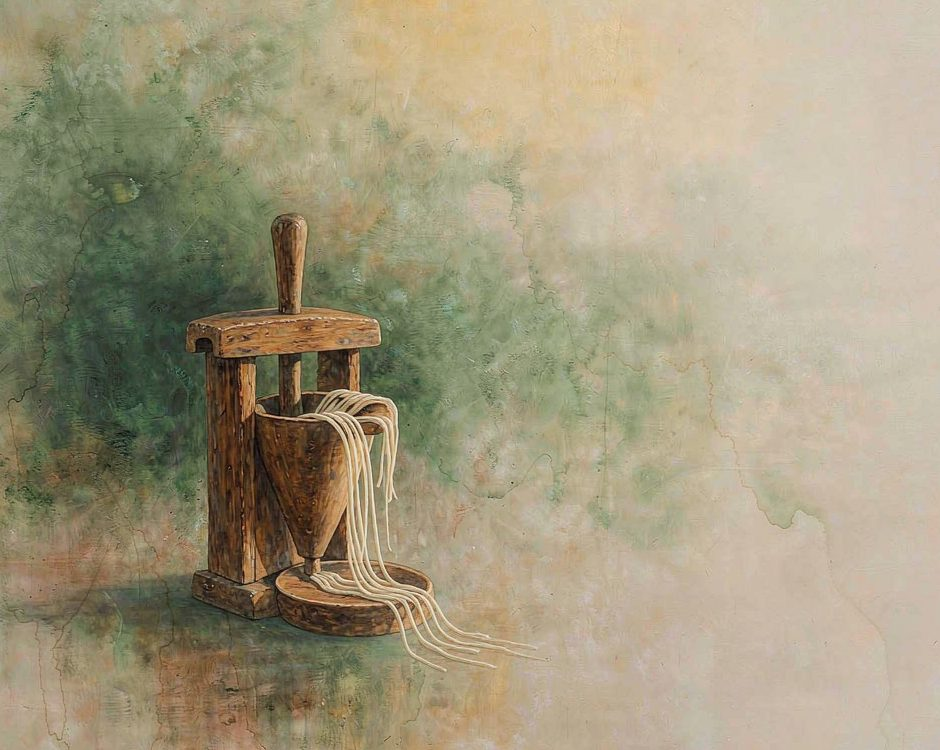
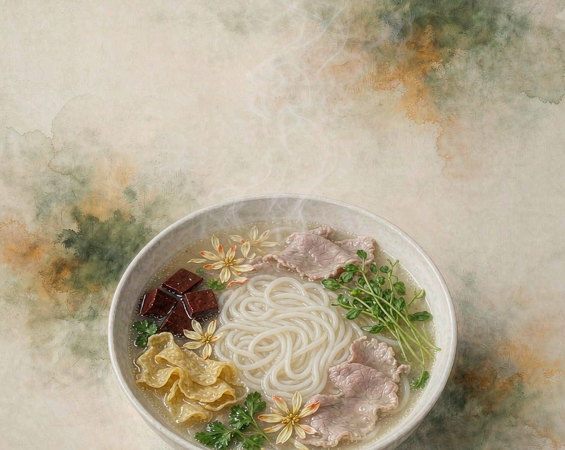

蒙自的過橋米線，湯不是煮的，是吊的。

吊湯要用一只大鍋，底下燒火，鍋裡放雞骨頭、豬骨、鴨骨，還有別的。火要小，不能大。湯要吊一整夜，慢慢出味。天亮的時候湯吊好了，顏色雪白，表面飄著一層油。
這鍋湯吊好之後不能馬上用。倒出來澄清，濾掉渣，只留湯。
一碗米線要過六個人的手。
吊湯的人、壓米線的人、挑肉片的人、燙配料的人、沖碗的人、端碗的人。少一個人，這碗就成不了。蒙自這地方特別的地方不在一樣東西，在它把好幾樣東西接在了一起。湯是火腿的、豆腐的、米的、豌豆的合。
一樣都不難，難的是一樣都不將就。
湯是前一天就吊好的
蒙自人早上吃米線，喝的就是前一天夜裡吊的湯。
夜裡十二點生火，骨頭下鍋，火調到最小。火太大湯會渾，太小又不出味。整個晚上要有人來看火。
看火這件事不難，難的是不能睡過去。
到天亮，湯已經吊了幾個小時。撈出來一看，湯是白的，白得像牛奶。表面那層油不能撇掉，那層油是香味的來源。吊好的湯要澄清。這一步濾得很細，細到要把湯裡所有的渣都濾掉。濾過的湯清亮，倒進鍋裡保溫，一整天都用它。
所以蒙自的米線湯，不是每碗現煮的。
是一鍋湯，從早賣到晚。早上第一碗和下午收攤那一碗，喝的是同一鍋湯。
這件事聽起來不講究，其實很講究。
一鍋湯能喝一天，說明吊湯的人對火候有把握。火候差一點，湯撐不過一天。
吊湯的鍋很大，一次能吊幾十碗的量。鍋底要墊雞骨，骨頭上不能有肉，肉多了湯會膩。骨要砸開，砸得越碎越好，碎的地方出味快。砸骨頭這件事要在天亮之前做完。
火要小到幾乎看不見明火。有人說這叫文火，也有人說是啞火。火小的時候湯不會翻滾，只在鍋底冒細泡。細泡一直冒一夜，骨頭裡的東西一點一點進湯裡。
這一夜沒有人能睡。
守火的人要隔一陣起來看一次，看火還在不在，湯有沒有幹。這個活兒一般兩個人輪班，一夜下來眼睛都是紅的。
米線是壓出來的，不是擀的
蒙自的米線是米做的，但做法跟別處不一樣。
米要先泡，泡到發脹，磨成漿。漿要蒸，蒸成一塊塊的米糕。米糕涼了以後再拿出來壓。壓的時候用一個木製的小壓機，把米糕一點一點壓成細條。

壓出來的米線是生的，硬的。要吃的時候再煮。煮的水要滾，米線下去十幾秒就撈。撈早了硬，撈晚了糊。壓機壓出來的米線粗細不一樣。壓的時候手要穩，壓下去的力道要勻。力道不勻，粗的粗細的細，煮的時候熟的時間就不一樣。
蒙自人吃米線有一個習慣，喜歡讓米線粗一點。
粗一點的米線掛得住湯，咬下去有嚼頭。細的一下就斷了，不掛湯。
配料要一樣一樣分開燙
吃蒙自米線有個規矩，所有配料要先燙過再進碗。生的不能直接放。
燒開水，另拿一個碗。
肉片、鴨血、菊花、豆腐皮、豌豆尖、火腿片、韭菜，一樣一樣放進去燙。燙的時候不能一起放，一起放就都過了。
燙的時間不一樣。肉片幾秒就行，菊花要燙透，豆腐皮要軟，豌豆尖燙一下就撈。一樣一樣來，這個過程要一兩分鐘。有人覺得麻煩，說直接放進去煮就行了。吃過的人不這麼說。一起煮，湯就渾了，味道就散了。
一樣一樣分開燙，是為了每樣東西都保住自己的味道。
燙好的料鋪在米線上面，起鍋前把熱湯從上面澆下去。澆的那一下，蒸汽衝上來，所有東西的味道在那一秒合到一起。

這一步是整碗米線的結尾，也是它的開頭。湯一澆，就該吃了。
蒙自人吃米線有固定的順序。先喝一口湯，嘗湯本身。然後吃配料，一樣一樣吃。收尾吃米線，蘸著剩下的湯。吃完不喝底湯，底湯留著。這個順序是幾百年吃出來的。什麼時候喝湯，什麼時候吃料，什麼時候吃米線，各有各的道理。亂吃就嘗不出層次。
各人有各人的吃法。有人先吃料再喝湯，有人把米線泡在湯裡一起吃。都對，只要自己吃得舒服。
誠實的部分
有一件事得說清楚。蒙自的過橋米線，現在到處都在做。做得好的不多。
原因不在配方，在細節。
湯要吊一整夜，很多店不吊，用雞湯加粉兌。肉片要切得薄到透光，很多店切得厚。配料要分開燙，很多店一鍋煮。這些差別吃的人不一定嘗得出來。吃的人只會覺得今天的味道有點淡，或者這個米線不太行，說不出為什麼。
蒙自的老店現在也難。
老手藝人是那一代人的事，年輕人願意接著做的少。吊湯要看一整夜的火，壓米線要手上的準頭，燙配料要記得住每一樣幾秒。這些都是慢功夫，年輕人嫌慢。
還有一個問題。過橋米線這個名字，被人用得太寬了。到處都叫過橋米線，很多跟蒙自沒關係。蒙自在的地方，反而要解釋自己才是那個真的。
在蒙自吃一碗米線，是要付時間錢的。
凌晨的守火，壓米線的力氣，燙配料的一兩分鐘，這些都算在價錢裡。價錢壓下來，壓掉的是這些。
蒙自人不抱怨。他們知道好吃的東西需要這樣。抱怨也沒用，因為願意吊一整夜的人還是太少。
這些照實說，是因為不想把一門手藝寫得太順。
蒙自的米線是真的好，但好在哪裡，要說清楚才有人懂。
想種回去
不必去蒙自，可以先自己吊一鍋湯。
買一副雞骨頭，豬骨也買一點。冷水下鍋，大火燒開，撇掉浮沫，然後轉最小火。放一夜。第二天早上把那鍋湯濾一遍。就會發現它比以為的清。留下來的湯慢慢喝，喝完再吊一鍋。
這個動作的意義是，替一樣東西熬一整夜。城市裡很少有人為一鍋湯熬一整夜。熬過的人知道那是什麼感覺。
或者學一次分開燙。
買幾樣菜，下鍋之前一樣一樣燙好，鋪在面上。燙的時候會發現每樣東西要的時間真的不一樣。
然後把這件事說給一個人聽。
說出去的時候不帶著炫耀，是一條線索。聽到的人或許也去吊一鍋湯，或者在吃米線的時候問一句這個湯是吊的嗎。一個人問，三個人問，這條線就接上了。
（小練習。今天吃一碗米線，問一下這碗湯是煮的還是吊的。）
你吃過最好吃的一碗米線在哪裡。